Cape Town.
A closer look.
Edition 3 / September 2026 / Housing opportunity report
30 pages, 30 precincts, linked site and subject indexes.
Cape Town. A closer look.
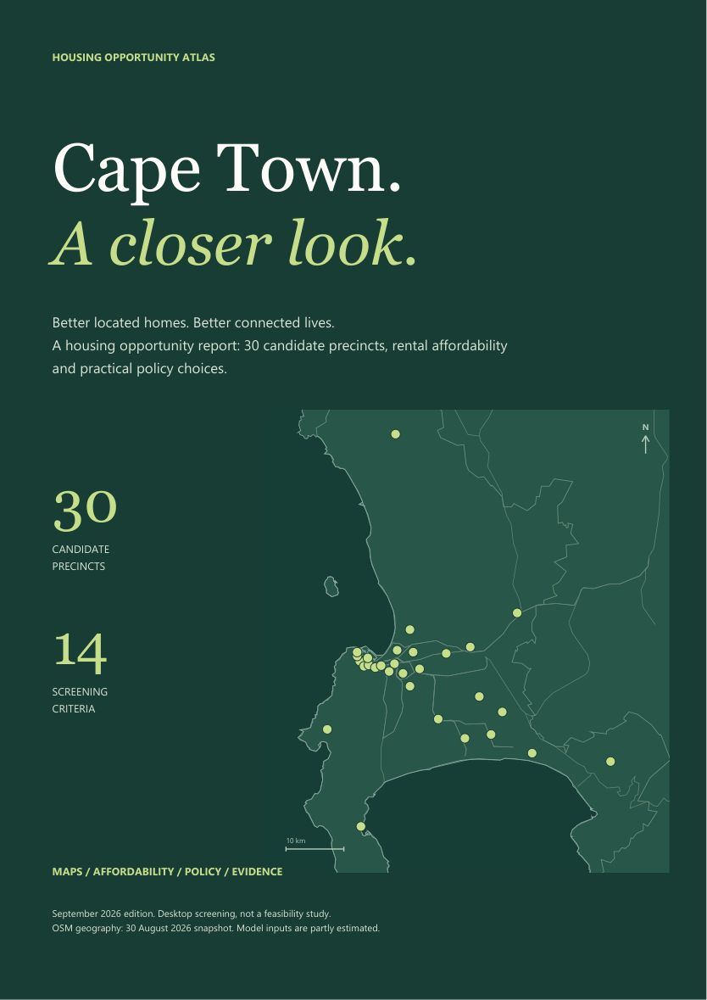
A guide to the report.
Where the evidence points.
The screening identifies different kinds of opportunity. It does not establish a development-ready pipeline.
1 / Access and capacity answer different questions.
Founders Garden ranks first in both lenses, with 528 modelled homes. Wingfield accounts for 25,200 homes (19.9% of the total), but its efficiency rank is eighth and its input top-ten stability is 88.8%. Neither measure alone is a delivery recommendation.
2 / The shortlist depends on contested inputs.
Seven sites retain an efficiency top-ten place in at least 90% of input-noise draws. Nine do so under weight changes. The average input-driven 5th-95th percentile rank span is 4.9 places. Input verification deserves priority over further fine-tuning of weights.
3 / Proximity is useful, but incomplete.
The 14 precincts within 1 km of mapped rail contain 36,462 modelled homes. This says nothing about service operation, barriers, walking routes or station capacity. Nearby facility counts likewise do not measure places available to new households.
Recommended decision
Progress a small, mixed verification shortlist across access, scale and redress. Release further investigation effort only when parcel, tenure, hazard and servicing evidence supports it.
All headline results refer to the existing 30-site model and the saved OSM snapshot; they are not independently verified supply forecasts.
Three investigation pathways.
These are proposed evidence-gathering tracks, not an approved priority list or funded delivery programme.
01 / Access-led verification
Founders Garden / Bellville CBD
Both remain in the efficiency top ten throughout the estimated-input simulations. Founders Garden ranks 1 in both lenses; Bellville ranks 2 for efficiency and 3 for redress.
Next evidence: Confirm parcel extent and tenure, current occupancy, pedestrian connections and engineering headroom. Strong access cannot substitute for these checks.
02 / Strategic capacity
Wingfield / Ysterplaat
Together these two precincts contribute 38,500 modelled homes, approximately 30% of the portfolio. Their large assumed areas make the portfolio sensitive to land availability and usable extent.
Next evidence: Resolve land-release and ownership assumptions, map constraints and investigate remediation and bulk services before treating modelled yield as achievable.
03 / Redress-sensitive review
Culemborg / Helen Bowden / District Six
Culemborg moves from rank 18 to 10 under redress; Helen Bowden moves from 15 to 8. District Six ranks 3 for efficiency and 2 for redress. These sites illustrate why one weighting is insufficient.
Next evidence: Verify occupancy, restitution and tenure context through appropriate records and engagement. Test whether proposed housing would improve access without causing displacement.
Selection logic is explicit: stable access leaders, the two largest capacity inputs, and sites with material redress movement or a strong redress rank.
What this study can answer.
A comparative desktop screening of 30 candidate precincts across Cape Town, using an existing MCDA model.
Decision question
Which candidate precincts justify closer investigation when geographic access, land supply, delivery burdens and spatial redress are considered together?
01 / Assemble the candidate set
The source CSV provides location, area, ownership, typology and criterion inputs. This is a supplied candidate set; it is not an exhaustive inventory of municipal land.
02 / Derive access and normalise criteria
Job access uses eight employment nodes and assumed job weights. Rail distance is computed from coordinates. Fourteen criteria are normalised within the 30-site set; cost criteria are reversed.
03 / Apply two value choices
Efficiency and redress each sum to 100% weight. Both use the same candidate set. Relative scores cannot be compared directly with a different city or a different candidate universe.
04 / Separate yield from suitability
Modelled homes equal assumed developable hectares multiplied by typology density. The separate impact measure combines suitability and the logarithm of housing yield; it is not a financial return.
05 / Stress-test and inspect
Weight and input perturbations test rank stability. The atlas adds named station proximity and unweighted facility context. It does not run a transport network or engineering feasibility model.
Analytical unit: a precinct point. Spatial extents, developable area and rights require parcel-level validation. No travel-time, cost-benefit or demand model is claimed.
What carries the weight.
Weights sum to 100% in each lens. All normalised scores run from 0 to 100 within this candidate set.
| CRITERION | EVIDENCE BASIS | EFF. | REDRESS |
|---|---|---|---|
| Job accessibility | Derived; assumed job weights | 18% | 14% |
| Transit access | Measured straight-line proximity | 16% | 13% |
| Developable land supply | Input; area unverified | 10% | 8% |
| Land cost | Input; land value unverified | 8% | 4% |
| Bulk infrastructure | Desktop estimate | 10% | 8% |
| Flood / water risk | Desktop estimate | 7% | 6% |
| Terrain buildability | Derived from SRTM samples | 4% | 3% |
| Environmental constraint | Desktop estimate | 6% | 5% |
| Contamination burden | Desktop estimate | 5% | 4% |
| Social facility access | Derived from mapped facilities | 6% | 5% |
| Heat / green deficit | Desktop estimate | 3% | 2% |
| Delivery complexity | Desktop estimate | 7% | 5% |
| Spatial redress | Desktop estimate | 0% | 17% |
| Displacement risk | Desktop estimate | 0% | 6% |
Eight qualitative criteria remain desktop estimates. The six other criteria include derivations from inputs whose accuracy still needs checking; they should not all be read as field measurements.
Source: suitability_model.py and summary.json. Weights are the existing project choices; this report does not claim an independently validated AHP elicitation.
One city. Many trade-offs.
Candidate points shown on OSM municipal, coastal and rail geometry. Numbers are efficiency ranks.
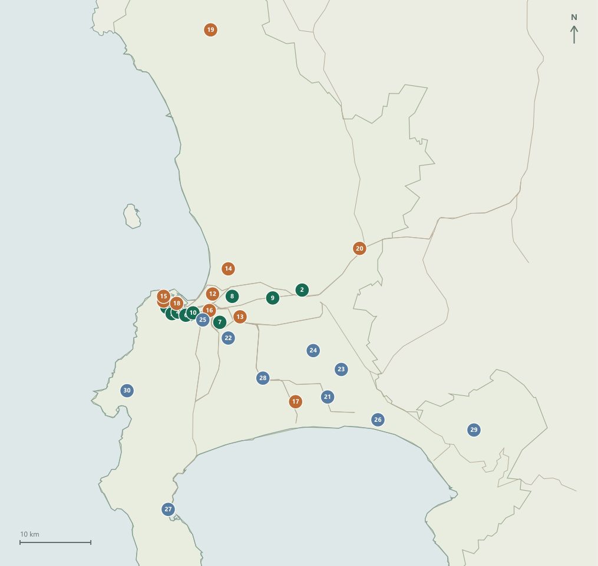
Ranks 1-10
Ranks 11-20
Ranks 21-30
The inner-city concentration is enlarged on the next page. The metro view retains peripheral sites so their distance from central employment is visible.
Map: OpenStreetMap contributors, ODbL. Points are precinct coordinates; neither markers nor municipal outlines are parcel boundaries.
Read the close-up.
The dense central cluster needs its own scale. Ranks refer to the efficiency lens.
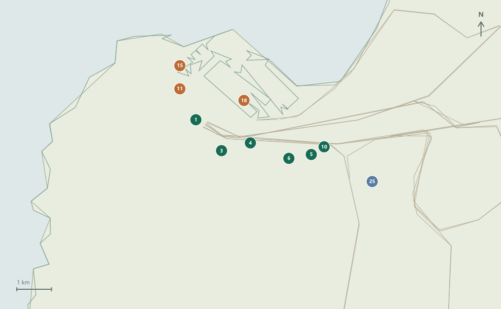
01 Founders Garden
04 Sir Lowrys Road
06 Woodstock Hospital
11 Prestwich Precinct
18 Culemborg
03 District Six
05 Pickwick Road
10 Salt River Market
15 Helen Bowden
25 Two Rivers / Oude Molen
Small central sites can score strongly on access while contributing less housing capacity than large strategic precincts. Location and scale need separate readings.
Source: saved precinct coordinates and OSM geometry. Rank numbers are identifiers on this plate, not measures of buildability.
Access is not the same as scale.
The green band marks sites within 1 km of a mapped rail point, measured in a straight line.
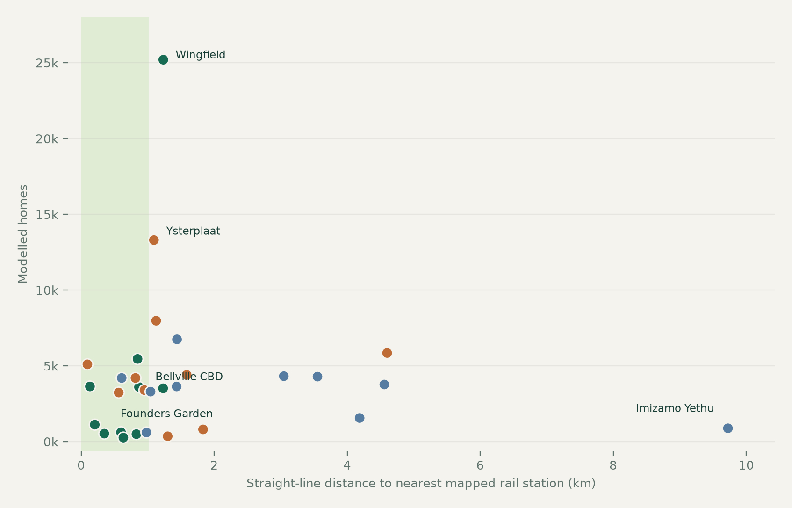
14 of 30 precincts fall within the 1 km rail threshold.
Founders Garden combines a central location with modest modelled yield. Wingfield contributes the largest assumed capacity, with a longer straight-line rail connection. Neither pattern settles a delivery decision.
Sources: candidate coordinates; 131 OSM station/halt points; original area and density assumptions. Rail presence does not verify an operating service.
Values change the shortlist.
The fourteen largest rank movements between the efficiency and spatial-redress weightings.
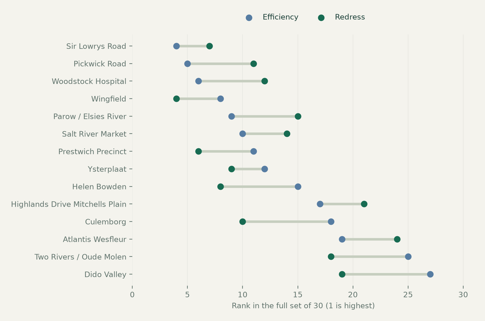
Treat scenario movement as a question for review.
Redress adds an explicit spatial-redress weight of 17% and a displacement-risk weight of 6%. Those criterion scores are analyst estimates. A change in rank reveals sensitivity to these choices, not independent evidence of suitability.
Source: outputs/site_rankings.csv and outputs/summary.json. Both lenses rank the same 30 sites. Chart is a selected set of the largest movements.
A stable rank is not a ready site.
The twelve highest efficiency-ranked precincts. Dots show the base rank; lines show simulated rank intervals.
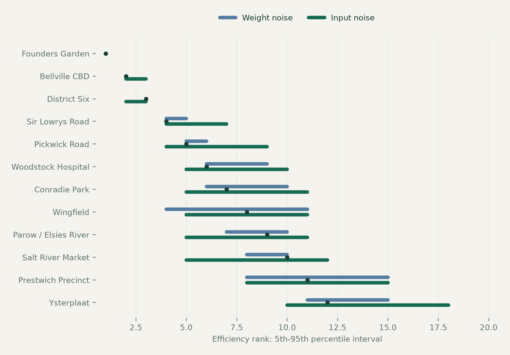
7 stable sites under input noise. 9 under weight noise.
Stability means retaining a top-ten position in at least 90% of draws. The weight test uses 5,000 draws; the estimated-input test uses 2,000. These are conditional simulations, not probabilities of approval or delivery.
Sources: sensitivity.csv and input_sensitivity.csv. Tests apply to the efficiency ranking. Intervals are the 5th-95th percentiles.
Founders Garden
A central, compact opportunity.
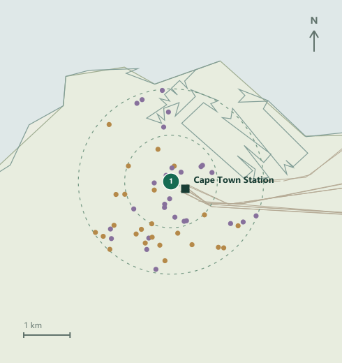
| Geographic context | Value |
|---|---|
| Nearest mapped station | Cape Town Station |
| Straight-line rail distance | 0.35 km |
| Schools / health within 2 km | 24 / 21 features |
| Input top-ten stability | 100% of draws |
| Assumed area / density | 2.4 ha / 220 units/ha |
Rings: 1 / 2 km. Square: mapped station. Dots: facilities.
Its leading score reflects strong access in the existing model. The small assumed area limits the scale of housing contribution.
What to verify next
Confirm the parcel extent, existing use, tenure and service capacity; check the walking connection to Cape Town Station.
Rail and facility context: saved OSM snapshot. Area, density, ownership and zoning are project inputs. The map shows a candidate point, not a site boundary.
Bellville CBD
An employment-centre candidate.
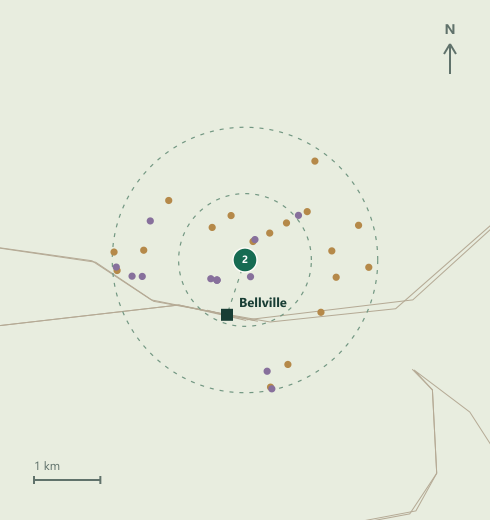
| Geographic context | Value |
|---|---|
| Nearest mapped station | Bellville |
| Straight-line rail distance | 0.87 km |
| Schools / health within 2 km | 18 / 10 features |
| Input top-ten stability | 100% of draws |
| Assumed area / density | 18.0 ha / 200 units/ha |
Rings: 1 / 2 km. Square: mapped station. Dots: facilities.
Bellville CBD combines high modelled suitability with materially more assumed capacity than the small inner-city sites.
What to verify next
Verify redevelopment availability, existing occupancy, municipal capacity and actual pedestrian links to rail and local employment.
Rail and facility context: saved OSM snapshot. Area, density, ownership and zoning are project inputs. The map shows a candidate point, not a site boundary.
Wingfield
Scale brings a larger evidence burden.
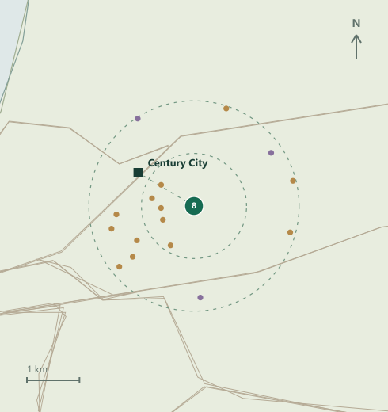
| Geographic context | Value |
|---|---|
| Nearest mapped station | Century City |
| Straight-line rail distance | 1.23 km |
| Schools / health within 2 km | 13 / 2 features |
| Input top-ten stability | 89% of draws |
| Assumed area / density | 180.0 ha / 140 units/ha |
Rings: 1 / 2 km. Square: mapped station. Dots: facilities.
Wingfield has the largest assumed developable area and yield in this dataset. Its scale should be assessed alongside tenure, remediation and infrastructure questions.
What to verify next
Establish land-release feasibility and parcel rights; commission contamination, flood and infrastructure checks before interpreting capacity as deliverable.
Rail and facility context: saved OSM snapshot. Area, density, ownership and zoning are project inputs. The map shows a candidate point, not a site boundary.
Large sites dominate the total.
Ten largest modelled yields. Capacity is the product of assumed developable hectares and typology density.
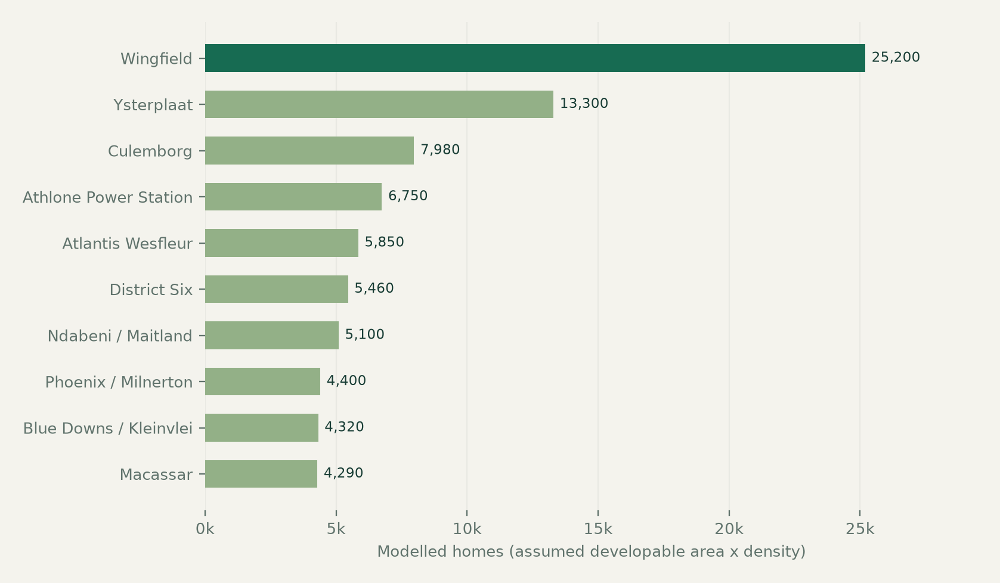
The three largest precincts represent 37% of modelled capacity.
This concentration means errors in a few area or density assumptions can materially change the portfolio total. Treat the 126,380-home headline as a scenario total, not a supply commitment.
The social-housing share is also an assumption: the original model assigns 65% of units to its target income band. No demand or funding validation is implied.
Source: outputs/site_rankings.csv. No municipal zoning record or surveyed developable-area polygon was joined to this calculation.
Where the modelled capacity sits.
Subregions are the source model groupings. They are not presented as official municipal planning districts.
| SOURCE SUBREGION | SITES | HOMES* | SHARE | RAIL <1 KM | STABLE** |
|---|---|---|---|---|---|
| Northern Metro | 7 | 58,280 | 46.1% | 5 | 1 |
| Cape Flats | 6 | 25,180 | 19.9% | 1 | 0 |
| Blaauwberg | 2 | 10,250 | 8.1% | 0 | 0 |
| Foreshore | 1 | 7,980 | 6.3% | 0 | 0 |
| Inner City | 5 | 7,954 | 6.3% | 5 | 4 |
| Helderberg | 2 | 5,850 | 4.6% | 0 | 0 |
| Observatory | 1 | 4,200 | 3.3% | 1 | 0 |
| Pinelands | 1 | 3,520 | 2.8% | 0 | 1 |
| South Peninsula | 2 | 1,480 | 1.2% | 1 | 0 |
| Atlantic Seaboard | 2 | 1,158 | 0.9% | 0 | 0 |
| CBD | 1 | 528 | 0.4% | 1 | 1 |
Northern Metro contains 46.1% of modelled capacity.
Its seven candidate precincts contribute 58,280 assumed homes. This concentration reflects which sites and areas entered the model; it does not establish that this is the optimal geographic allocation of housing.
*Assumed capacity. **Efficiency top-ten membership in at least 90% of input-noise draws. Rail counts refer to precinct points, not homes or residents.
Separate a score from a decision.
A practical boundary between what the current screening supports and what remains to be established.
| DECISION AREA | CURRENT EVIDENCE | REQUIRED NEXT EVIDENCE | INTERPRETATION LIMIT |
|---|---|---|---|
| Land extent / availability | Candidate location and an assumed developable area. | Verified parcel geometry, ownership and availability. | Do not treat hectares as confirmed supply. |
| Planning rights | An analyst-assigned zone and a modelled capacity split. | Current municipal zoning records, overlays and applicable rights. | Do not describe the output as approved yield. |
| Transport access | Distance to a mapped station or halt. | Operating service, pedestrian routes, barriers and frequency. | Do not report walking or journey times. |
| Facilities | Mapped school and health features near the point. | Capacity, access rules, condition and duplication review. | Counts do not establish service adequacy. |
| Hazards / services | Estimated flood, environmental, contamination and infrastructure scores. | Official layers, site investigation and engineering assessment. | Do not substitute the index for a technical study. |
| People / redress | Analyst redress and displacement scores. | Occupancy, tenure, restitution context and community engagement. | Do not infer consent or social acceptability. |
A material contradiction should trigger a review of the input and re-run of the model, not an attempt to explain away the new evidence.
Proposed decision gates for further investigation. No municipality, owner or community has endorsed a site through this report.
A sequence that can be audited.
Suggested responsibilities describe functions, not named or appointed delivery partners.
| GATE | PROPOSED FUNCTION | EVIDENCE TO RETAIN | DECISION RULE |
|---|---|---|---|
| 01 / Establish the land | GIS / land administration | Parcel overlay; tenure and ownership evidence; verified availability; current zoning record. | Pause if the assumed area or availability cannot be established. |
| 02 / Check real access | Transport / social planning | Station service check; walkable routes and barriers; facility capacity and access review. | Re-score access if a mapped feature is unusable or misleading. |
| 03 / Test constraints | Engineering / environmental team | Flood and environmental overlays; contamination review; servicing assessment; usable area. | Revise developable extent and costs before refining housing yield. |
| 04 / Review and re-rank | Planning / community engagement | Document occupancy, rights and engagement; update assumptions; re-run both lenses and sensitivity. | Record changes and only then agree the next investigation shortlist. |
Keep a change register.
Record site ID, input field, old value, replacement value, source, source date, reviewer and reason. Rebuild maps, charts and the report from the same versioned data.
Sequence is indicative. It is not a project schedule, budget, procurement instruction or substitute for professional and community review.
The portfolio / 01-15
Efficiency order. Rail distances are straight-line; stability is the input-noise share in the top ten.
| Rank / site | Subregion | Redress rank | Modelled homes | Rail km | Stability |
|---|---|---|---|---|---|
| 1 / Founders Garden | CBD | 1 | 528 | 0.35 | 100% |
| 2 / Bellville CBD | Northern Metro | 3 | 3,600 | 0.87 | 100% |
| 3 / District Six | Inner City | 2 | 5,460 | 0.85 | 100% |
| 4 / Sir Lowrys Road | Inner City | 7 | 616 | 0.60 | 100% |
| 5 / Pickwick Road | Inner City | 11 | 264 | 0.63 | 100% |
| 6 / Woodstock Hospital | Inner City | 12 | 494 | 0.83 | 96% |
| 7 / Conradie Park | Pinelands | 5 | 3,520 | 1.23 | 94% |
| 8 / Wingfield | Northern Metro | 4 | 25,200 | 1.23 | 89% |
| 9 / Parow / Elsies River | Northern Metro | 15 | 3,640 | 0.13 | 88% |
| 10 / Salt River Market | Inner City | 14 | 1,120 | 0.20 | 82% |
| 11 / Prestwich Precinct | Atlantic Seaboard | 6 | 352 | 1.30 | 33% |
| 12 / Ysterplaat | Northern Metro | 9 | 13,300 | 1.09 | 9% |
| 13 / Epping Market | Northern Metro | 13 | 4,200 | 0.82 | 5% |
| 14 / Phoenix / Milnerton | Blaauwberg | 17 | 4,400 | 1.59 | 2% |
| 15 / Helen Bowden | Atlantic Seaboard | 8 | 806 | 1.83 | 1% |
A low stability value means the site rarely enters the efficiency top ten under the tested input perturbations. It does not mean a low probability of housing delivery.
Sources: rankings and input-sensitivity outputs; site_context.json. All home counts are modelled, not approved.
The portfolio / 16-30
Efficiency order. Rail distances are straight-line; stability is the input-noise share in the top ten.
| Rank / site | Subregion | Redress rank | Modelled homes | Rail km | Stability |
|---|---|---|---|---|---|
| 16 / Ndabeni / Maitland | Northern Metro | 16 | 5,100 | 0.09 | 1% |
| 17 / Highlands Drive Mitchells Plain | Cape Flats | 21 | 3,400 | 0.95 | 1% |
| 18 / Culemborg | Foreshore | 10 | 7,980 | 1.13 | 0% |
| 19 / Atlantis Wesfleur | Blaauwberg | 24 | 5,850 | 4.60 | 0% |
| 20 / Wallacedene / Kraaifontein | Northern Metro | 22 | 3,240 | 0.57 | 0% |
| 21 / Kuyasa / Khayelitsha | Cape Flats | 23 | 3,300 | 1.04 | 0% |
| 22 / Athlone Power Station | Cape Flats | 20 | 6,750 | 1.44 | 0% |
| 23 / Blue Downs / Kleinvlei | Cape Flats | 25 | 4,320 | 3.05 | 0% |
| 24 / Delft Symphony | Cape Flats | 26 | 3,770 | 4.56 | 0% |
| 25 / Two Rivers / Oude Molen | Observatory | 18 | 4,200 | 0.61 | 0% |
| 26 / Macassar | Helderberg | 27 | 4,290 | 3.55 | 0% |
| 27 / Dido Valley | South Peninsula | 19 | 600 | 0.98 | 0% |
| 28 / Philippi East | Cape Flats | 28 | 3,640 | 1.44 | 0% |
| 29 / Sir Lowrys Pass Village | Helderberg | 30 | 1,560 | 4.19 | 0% |
| 30 / Imizamo Yethu | South Peninsula | 29 | 880 | 9.72 | 0% |
A low stability value means the site rarely enters the efficiency top ten under the tested input perturbations. It does not mean a low probability of housing delivery.
Sources: rankings and input-sensitivity outputs; site_context.json. All home counts are modelled, not approved.
Better evidence. Better decisions.
A practical reading guide to the data behind the atlas and its remaining gaps.
Mapped / measured
OSM snapshot, 30 August 2026: 131 railway station/halt points and 1,642 facility features. The new context uses haversine distances, unweighted school and health-feature counts within 1 km / 2 km, and named nearby features. OSM may contain incomplete coverage or overlapping representations.
Derived / modelled
Fourteen normalised criteria, two weighting scenarios and density-based yields. Job access uses eight employment nodes with assumed job weights. The model ranks only these 30 candidates. A score out of 100 is a relative index, not a feasibility percentage.
Estimated / unverified
Flood, environment, contamination, infrastructure, heat, delivery complexity, redress and displacement contain analyst estimates. Area, land value, density, tenure and zoning inputs also need independent validation. Remote-sensing indicators have not been replaced with newly measured imagery here.
Sensitivity / limitations
Weight noise: 5,000 draws, each weight varied by up to 30% and renormalised. Input noise: 2,000 draws varying the estimated criteria by 15% of their range. Neither test covers every uncertainty, including errors in assumed parcel extent, legal rights or future transport service.
Next evidence to obtain
Join verified cadastral parcels and zoning; review tenure and availability; measure network walking access; obtain flood and environmental layers; assess engineering capacity; and consult affected communities on occupancy, displacement and priorities.
SOURCE REGISTER
Project files: candidate_sites.csv, site_rankings.csv, criteria_scores.csv, sensitivity.csv, input_sensitivity.csv, summary.json and data/geo/site_context.json. Base geography: OpenStreetMap contributors, ODbL. Original terrain: SRTM measurements retained from the project.
openstreetmap.org/copyright
Trace the finding to its source.
Project evidence and external reference material are separated below. Reference pages were checked on 16 September 2026.
| ID | PROJECT SOURCE | WHAT IT SUPPORTS |
|---|---|---|
| S01 | data/candidate_sites.csv | Candidate set, coordinates, attributes and assumptions. |
| S02 | outputs/site_rankings.csv / summary.json | Rankings, yields, regional totals and scenario weights. |
| S03 | outputs/sensitivity.csv / input_sensitivity.csv | Weight-noise and estimated-input rank simulations. |
| S04 | data/geo/site_context.json / basemap.json | Derived OSM geography and proximity calculations; snapshot 30 Aug 2026. |
| S05 | scripts/suitability_model.py / measure_site_context.py | Scoring, density assumptions and original measurement method. |
R01 / OpenStreetMap copyright and licence
Attribution and licence reference for the OSM-derived geography. The report uses the saved snapshot rather than a newly collected OSM dataset.
R02 / USGS: SRTM 1 Arc-Second Global
Authoritative product description: approximately 30 m postings. Original project terrain values were retained; this revision did not collect new terrain measurements.
R03 / City of Cape Town: Zoning layer
A relevant source for future parcel verification. The official service describes an integrated zoning view for approved and registered parcels. It was not joined to the model.
External links are clickable. Municipal zoning is listed as a verification source, not as evidence that any candidate has a particular zoning designation.
Find a precinct by name.
Every candidate appears here. Directory entries contain both rankings, modelled homes, rail distance and stability.
| Precinct | Site ID | Directory page | Profile page | Metro map |
|---|---|---|---|---|
| Athlone Power Station | S15 | 20 | - | 7 |
| Atlantis Wesfleur | S28 | 20 | - | 7 |
| Bellville CBD | S16 | 19 | 13 | 7 |
| Blue Downs / Kleinvlei | S27 | 20 | - | 7 |
| Conradie Park | S11 | 19 | - | 7 |
| Culemborg | S03 | 20 | - | 7 |
| Delft Symphony | S18 | 20 | - | 7 |
| Dido Valley | S22 | 20 | - | 7 |
| District Six | S10 | 19 | - | 7 |
| Epping Market | S14 | 19 | - | 7 |
| Founders Garden | S07 | 19 | 12 | 7 |
| Helen Bowden | S08 | 19 | - | 7 |
| Highlands Drive Mitchells Plain | S26 | 20 | - | 7 |
| Imizamo Yethu | S23 | 20 | - | 7 |
| Kuyasa / Khayelitsha | S21 | 20 | - | 7 |
| Macassar | S20 | 20 | - | 7 |
| Ndabeni / Maitland | S13 | 20 | - | 7 |
| Parow / Elsies River | S17 | 19 | - | 7 |
| Philippi East | S19 | 20 | - | 7 |
| Phoenix / Milnerton | S30 | 19 | - | 7 |
| Pickwick Road | S06 | 19 | - | 7 |
| Prestwich Precinct | S09 | 19 | - | 7 |
| Salt River Market | S04 | 19 | - | 7 |
| Sir Lowrys Pass Village | S25 | 20 | - | 7 |
| Sir Lowrys Road | S24 | 19 | - | 7 |
| Two Rivers / Oude Molen | S12 | 20 | - | 7 |
| Wallacedene / Kraaifontein | S29 | 20 | - | 7 |
| Wingfield | S01 | 19 | 14 | 7 |
| Woodstock Hospital | S05 | 19 | - | 7 |
| Ysterplaat | S02 | 19 | - | 7 |
Use the atlas for a geographic search.
The interactive version also supports name / site-ID search, map selection, regional filtering and three-site comparison.
Find the question that matters.
Page references link to the relevant discussion. The indexes are also included in the reading editions.
| Subject | PDF pages |
|---|---|
| Access to employment | 5, 6, 9 |
| Affordability / rent and household budgets | 25 |
| Analyst estimates / provenance | 6, 17, 21 |
| Capacity / housing yield | 3, 9, 15, 16 |
| Community engagement / displacement | 4, 17, 18 |
| Criteria and weighting choices | 5, 6, 10 |
| Data sources and references | 21, 22 |
| Developable area assumptions | 5, 15, 17 |
| Efficiency ranking | 6, 10, 19 |
| Facility access and counts | 9, 12, 13, 14, 17 |
| Flood / contamination / servicing | 6, 17, 18 |
| Geographic scope and maps | 5, 7, 8 |
| Housing challenges / short-term rentals | 26 |
| Input uncertainty | 3, 11, 21 |
| Land ownership / tenure | 4, 17, 18 |
| Monte Carlo sensitivity | 11, 21 |
| Policy implementation and monitoring | 29 |
| Policy sources | 30 |
| Rail station proximity | 9, 12, 13, 14 |
| Recommendations and decision gates | 4, 17, 18 |
| Regional distribution | 16 |
| Rental protection / rent controls | 28 |
| Site directory and profiles | 12, 13, 14, 19, 20, 23 |
| Social housing and supply solutions | 27 |
| Spatial redress | 4, 6, 10 |
| Verification sequence | 18 |
| Zoning and planning rights | 17, 22 |
Edition 3 / September 2026. A comparative desktop screening report, an interactive atlas and an evidence register should be read together.
What can households actually afford?
High rent is a household-budget problem as well as a land-supply problem. Add income, transport and recurring charges to the analysis.
PayProp reported these averages for its rental index, published 24 March 2026 [P01]. This is dated provincial context, not a Cape Town neighbourhood rent survey or a current asking-price quote. The provincial figure is 25.7% above the national figure (our calculation).
ILLUSTRATIVE BUDGET / NOT SURVEY DATA
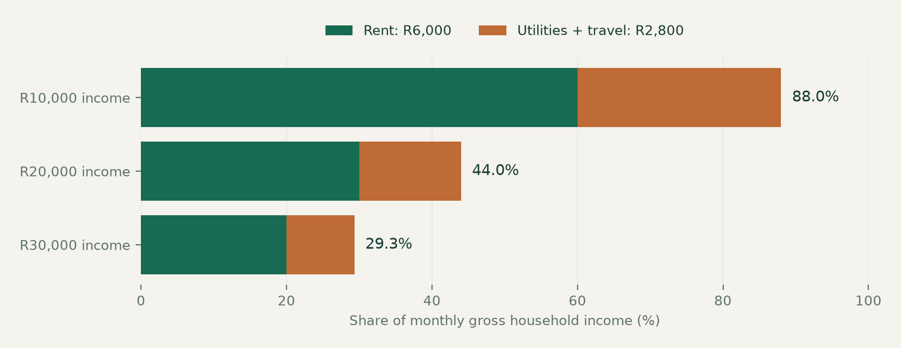
Example assumptions: R6,000 rent + R1,000 utilities + R1,800 travel per month. At R20,000 gross income, rent alone takes 30%; the combined amount takes 44%. Tax, food, care costs and debt are still excluded. A 30% rent-to-income line is a comparison benchmark here, not a legal cap or a guarantee of affordability.
Add an affordability test to each candidate.
Specify target incomes, unit sizes, all-in costs and the subsidy or operating model needed. The existing suitability score does not calculate achievable rents.
P01: PayProp Q4 2025, published 24 March 2026. Illustration: author assumptions; it is not an observed household or a project rental forecast.
Why cheaper homes are hard to deliver.
These are mechanisms to investigate locally. The screening model does not estimate their individual contribution to Cape Town rents.
| CHALLENGE | WHY IT MATTERS | EVIDENCE NEEDED |
|---|---|---|
| Rents and incomes diverge | A rent can rise faster than a household can absorb, while deposits and recurring charges add pressure. | Track agreed rents by unit type, income band, utilities and deposit burden. |
| Well-located land is difficult to unlock | Tenure, competing uses, approvals and service capacity can delay delivery even when a map score is strong. | Verify parcels, ownership, rights, infrastructure budgets and actual milestones. |
| Building and operating costs must be covered | Construction finance, maintenance, insurance, rates and vacancies affect viable rents. | Test whole-life costs and subsidy needs; retain realistic maintenance reserves. |
| A cheaper address can mean a costly commute | Distance, transfers, fares and unreliable service can absorb apparent rent savings. | Measure door-to-door journeys and household transport spending. |
| Displacement and unequal access | Existing residents and informal tenants may lose access through redevelopment or poorly targeted allocation. | Map occupancy and tenure; plan engagement, relocation safeguards and transparent allocation. |
| Short-term use and vacancies may matter locally | Tourism-linked use can compete with long-term housing in some areas; listings alone do not prove the scale of conversion. | Separate entire-home commercial activity from occasional letting and count actual long-term stock changes. |
Design implication: show a candidate’s land, service, cost and community evidence beside its score. Keep unknowns explicit rather than giving unmeasured constraints a false precision.
Analytical framework proposed for this report. See P06 for general housing-policy context; no causal ranking of these pressures is asserted.
Match the intervention to the problem.
A combined programme should protect households now while creating and retaining affordable homes over time. Proposed options below require local feasibility and authority checks.
| RESPONSE | DELIVERY ROUTE | TRADE-OFF / SAFEGUARD | MEASURE |
|---|---|---|---|
| Social and affordable rental | Public land or subsidy with an operating partner; protect affordability through enforceable covenants. | Long-term funding, maintenance and fair allocation. | Occupied homes by income band; rent + service costs. |
| Serviced land and infill | Resolve title, engineering and approvals; support suitable density and conversions near jobs. | Environmental, heritage and safety checks; measure delivery, not only land released. | Time to occupation; net additional homes; service capacity. |
| Small-scale / backyard rental | Technical assistance, safe service connections and suitable finance for compliant small landlords. | Habitability and affordable tenancy terms; avoid displacement during upgrades. | Safe occupied units; repairs; tenant cost changes. |
| Targeted tenant support | Time-limited hardship help, deposit assistance and accessible dispute support. | Fund eligibility and review; avoid excluding informal-income households. | Housing retention; arrears resolution; cost per household. |
| Transparent rental rules | Clear leases and charges, maintenance enforcement and predictable review processes. | Capacity to investigate and enforce; keep access fair for new tenants too. | Dispute time; conditions; entry rents and available stock. |
Track the public pipeline separately.
The City reported more than 14,000 units in active land release or packaging on 18 August 2026 [P07]. That announced pipeline is separate from this model and is not a completed-home count.
Proposals: author synthesis, informed by P06. City announcement: P07. Do not add municipal pipeline figures to the modelled precinct capacities.
Protection today. Supply tomorrow.
Rent control is a family of policies. A freeze, an annual increase limit and an affordable-housing covenant work differently.
| APPROACH | POTENTIAL BENEFIT | DESIGN RISK |
|---|---|---|
| Rent freeze / hard ceiling | Can give covered tenants immediate payment certainty. | May reduce maintenance or rental availability if costs cannot be covered; allocation can exclude newcomers. |
| Rent stabilisation | Can make increases within a tenancy more predictable. | Needs rules for new lets, new construction, allowable costs, enforcement and anti-avoidance. |
| Subsidised affordable rents | A subsidy or public-land agreement can target below-market rents to eligible households. | Requires durable funding, operating oversight and a clear affordability period. |
WHAT CURRENT SOUTH AFRICAN GUIDANCE SAYS
The Rental Housing Act 50 of 1999 repealed the old Rent Control Act [P02]. Western Cape guidance points to the lease or agreed terms for increases and to negotiation where these are unspecified [P03]. Do not treat 10% or CPI as an automatic legal ceiling. The provincial Rental Housing Tribunal offers free dispute-resolution services [P04]. These are current-framework notes, not a ruling on a particular lease.
WHAT THE INTERNATIONAL EVIDENCE CAN AND CANNOT TELL US
Diamond, McQuade and Qian (2019) found less displacement among covered San Francisco tenants, alongside a 15% reduction in rental supply from affected landlords [P05]. That historical finding illustrates a trade-off; it is not a forecast for Cape Town.
If considering stabilisation, test the whole design.
Establish legal authority and a rental baseline; consult tenants and landlords; define coverage, vacancy rules and fair cost review; enforce habitability; monitor new supply, conversions and access for newcomers. Pair protection with affordable supply.
Sources P02-P06. Options are proposals for appraisal, not existing Cape Town rules or a recommendation for a particular percentage cap.
Turn proposals into accountable work.
An indicative sequence for discussion, not an adopted municipal programme or a funded project schedule.
| INDICATIVE HORIZON | ACTION | PROPOSED FUNCTION | OUTPUT TO RETAIN |
|---|---|---|---|
| First 0-3 months | Establish the baseline | Housing / GIS / statistics teams | Agreed rents, income bands, unit type, tenure, service costs, commuting and stock definitions. |
| Months 3-12 | Verify and package sites | Land / planning / engineering teams | Parcel, rights and services evidence; transparent site status and milestone register. |
| Months 3-12 | Test targeted protection | Housing / legal / community teams | Costed tenant-support or stabilisation design; authority review, consultation and delivery capacity. |
| Months 12-36 | Deliver and evaluate | Funders / delivery partners / residents | Track occupied affordable homes, operating costs, repairs and displacement; compare with the baseline. |
A MINIMUM PUBLIC DASHBOARD
Publish agreed-rent medians by unit type and area; rent + utilities + travel as an income share; net long-term rental stock; verified and occupied affordable units; approvals-to-occupation time; tenancy disputes and resolution time; maintenance performance; and displacement or relocation outcomes.
Judge outcomes, not announcements.
A land release is not an occupied home. A protected existing tenant does not prove access improved for a new tenant. Report both household outcomes and supply changes, with definitions and dates.
Governance and monitoring proposals by the author. Protect personal tenant information and publish aggregated statistics; record definitions and missing coverage.
The evidence behind the discussion.
Policy and affordability references checked on 16 September 2026. P01 is a dated market observation; proposed actions remain author analysis.
P01 / PayProp: Q4 2025 Rental Index summary
Published 24 March 2026. Provincial and national average rent context; not a Cape Town local rent survey.
P02 / South African Government: Rental Housing Act
Act 50 of 1999; repeal of the former Rent Control Act and the rental dispute framework.
P03 / Western Cape: Tenant frequently asked questions
Official guidance on lease terms, negotiated increases and referral for individual disputes.
P04 / Western Cape: Rental Housing Tribunal
Free tenant / landlord dispute services and the current complaint route.
P05 / Diamond, McQuade & Qian: Rent control study
American Economic Review 109(9), 2019, pp. 3365-3394. San Francisco evidence, not a Cape Town forecast.
P06 / OECD: An Agenda for Housing Policy Reform
2024 policy framework; balancing access, tenant protection, maintenance and rental supply incentives.
P07 / City: Affordable Housing Investment Connect
18 August 2026 municipal announcement. Active land-release / packaging pipeline, separately defined from occupied units.
External references support the stated observations. The affordable-rent examples, proposed programme and monitoring dashboard are analytical suggestions.